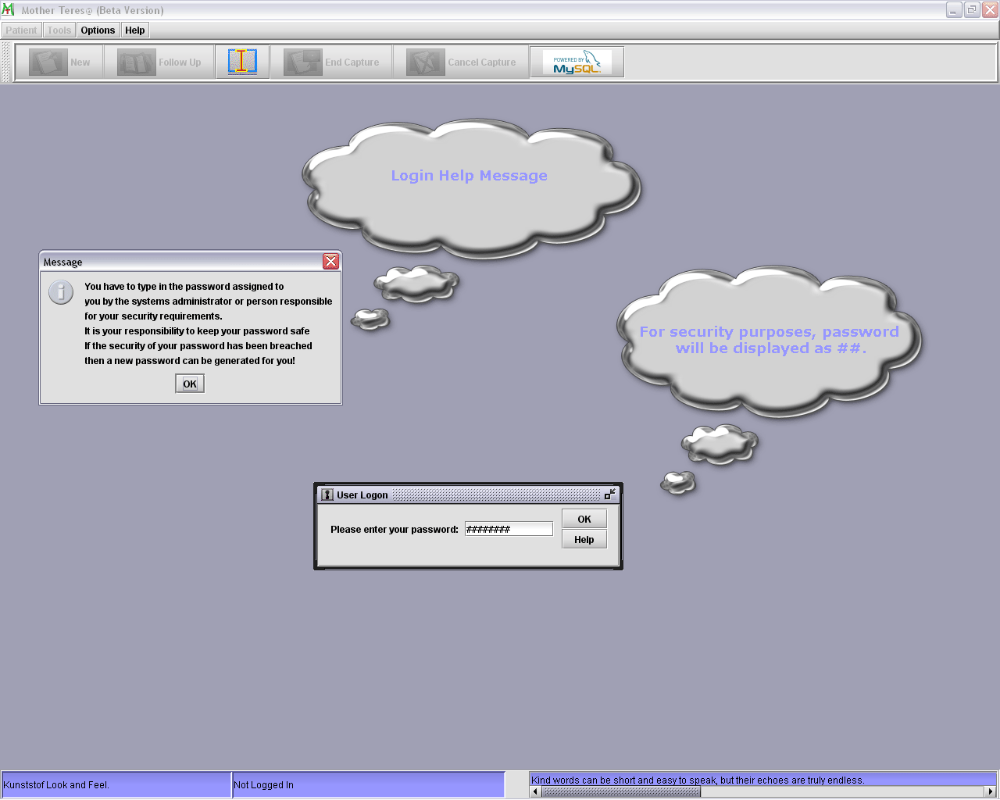

Mother Teres@ Login Help
Figure
1: Sample screen capture of Login screen depicting relevant items.
- Please make sure that the database is up and running before logging in.
- Type in your given password in the Login Dialogue box. (Password is case
sensitive).
- Password Typed is shown as ‘XXXX’ for security reasons.
- You have 4 chances to type in the correct password.
- If Login is successful the ‘Login’ status box will show who is
logged in.
- If the password is forgotten then you will have to contact your supplier
as a new one will have to be generated for you.
- Please keep your password secret.
- More than one password/person can unlock the system.
- If the database is down a message will inform you to that effect as soon as
you try to Log In.
- You can complete the Login procedure by pressing the ‘Enter’ key
or pressing the ‘OK’ button in the Login Dialogue box.